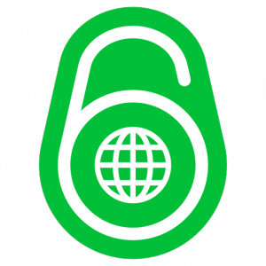

Vous n'êtes probablement pas sans savoir que le nombre d'IPv4
est en pénurie depuis 2011. Mais bon, c'est pas comme si on l'avait
prévu depuis
1990.
En effet, une IPv4 étant codée sur 32 bits, cela nous fait donc 2^32
adresses possibles, soit un peu moins de 5 milliard. C'est aujourd'hui
peu pour le nombre de machines connectées à l'Internet et ayant besoin
d'une IP publique (une IP accessible depuis n'importe où sur
l'Internet). C'est d'ailleurs pour cela que les
FAI
ont introduit ce qu'on appelle le
NAT.
Mais aujourd'hui cela ne suffit plus, il a fallu trouver une ou
plusieurs solutions. Les deux plus communes sont les suivantes :
- on utilise le NAT à grande échelle, au niveau des FAI (ce qu'on
appelle le CGN)
- on change le mode d'adressage des machines sur les réseaux
La première solution n'a pur moi que des désavantages. Si on regarde le
NAT au niveau de nos routeurs maisons, quand on a un serveur chez soi,
c'est une merde complète : pour chaque service il nous faut ouvrir un
port et donc créer une règle. C'est super chiant, et pour peu qu'il
faille redémarrer le routeur pour valider les changements ça devient un
enfer (pour la freebox par exemple, alors que d'autres routeurs de FAI
de demandent pas de reboot, on m'explique ? ). Alors imaginons ceci
étendu aux FAI. Un bordel monstre qui implique une plus grande
difficulté à s'auto-héberger.
La deuxième reste pour moi l'unique envisageable : celle
d'IPv6. Une IPv6 est codée sur
128 bits, ce qui fait 2^128 adresses utilisables. Pour donner un ordre
de grandeur, on aime bien dire que chaque humain sur Terre pourrait
donner une adresse différentes à toutes les étoiles de l'univers, et ça
fait beaucoup. En plus de résoudre le problème d'adressage, le protocole
en lui-même à été amélioré de diverses manières.
Pour plus d'infos sur IPv6, je vous conseille cette conférence :
Ipv6/IPv4 - Pas Sage En
Seine
Il faut pouvoir utiliser de plus en plus IPv6, et pour cela je vous
invite à vérifier que votre navigateur et votre connexion sont
compatibles via ce lien, et que les pages
web que vous visitez sont compatibles
également. Il existe par ailleurs
un plugin Firefox permettant d'afficher l'IP du serveur hébergeant les
pages que vous visitez, du nom de
ShowIP. Si
l'IP est verte c'est de l'IPv6, sinon elle est rouge et c'est de l'IPv4.
Une bonne pratique serait de signaler aux admins que leur serveur
n'accepte pas l'IPv6.
Passons à IPv6, car c'est l'Internet de demain qui est en jeu.
Matlink
Commentaires